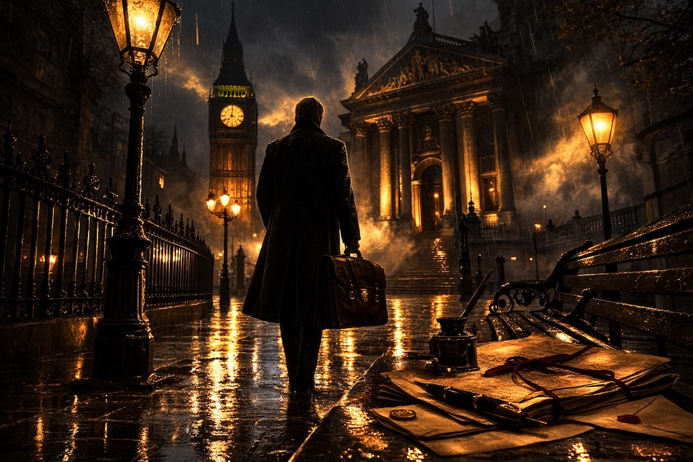

‘Hello, my name is Nick Green and I’m a retired defence lawyer.’ Had a suitable support group existed I wouldn’t need to reduce my exploits to this book. No one cautioned me at law school that in robustly deploying English law in criminal courts I would be the target of an undercover police operation; that my mobile phones would be tapped and my office bugged; that the secret police would ask my wife to betray me and allegations made that I was a money launderer for organised crime and planned the prison escape by helicopter of high risk clients.
Oh, and amongst it all, that my firm, Nicholas Green Solicitors, would make legal history with several entries in Archbold, the ‘bible’ of cases, that changed English criminal law. It was not through lack of effort or resources that the State never got me in the dock. My many enemies will say this was down to luck and possibly my anti-surveillance skills!
I suppose some in the support group could be forgiven for believing my story’s been embroidered. Over the following pages I hope to prove that each of these extraordinary events, and more, really did happen to me, a defence lawyer who didn’t play the criminal justice game the way I was supposed to.
If I’d known how much my style of lawyering would come to antagonise the legal establishment and the police, I sometimes wonder if I would have been better off as a road sweeper in my home town of Blackpool. I hail from public school stock and was raised to believe in authority and the rule of law. I was on no burning mission from the womb to land blows on law enforcement agencies in a desire to live in a lawless State.
However, once rudely awakened to the realities of those who inhabit the justice system, I became a different legal animal. I wanted no part in the ‘old boy’ network, nor to heighten the reciprocity within the ranks of the legal profession who aim their sights on becoming a judge.
The younger you come out of the traps and face down the opposition, the quicker the learning curve. There may be camaraderie and safety in the shallow end, but none of these chapters have been written from the comfort of the infinity pool. Most of my profession excel in the baby pool, buoyed by armbands that change colour as they learn the strokes of their peers. No-one can guarantee results, but one can discharge one’s duties without fear or favour. Never take a backward step, and as the ‘Nos’ ring out, continue undeterred.
At Rossall High School, I learnt from England flanker Peter Winterbottom how he accelerated into tackles. From Peter Fury, uncle and former trainer of heavyweight champ, Tyson, I learnt to be ever vigilant for movements in your opponent, be it a shoulder dip, a head movement, a twist in a fist - all tell-tale signs for a fighter wanting to be one step ahead in the ring. In criminal prosecution this is deployed by setting one’s course early, before the case papers have been served, enhancing it with defence case statements and a litany of focused requests for disclosure.
This insider’s account of the British criminal justice system has taken over five years to corral, as writing it had to be slotted in between major criminal trials. Revisiting the professional and personal abuse I have suffered for doing my job was not easy, and I struggled initially to find my voice as an author - never a problem I suffered as a lawyer.
When a first draft of the manuscript was completed I had the good fortune to enjoy a late lunch with Michael Gillard, a reporter who’d just published ‘Legacy - Gangsters, Corruption and the London Olympics’, which uncovered the nefarious activity of organised crime families on the land upon which athletic feats triumphed.
His digging exposed all manner of corruption, aided by a bevy of bent coppers in the Metropolitan police. Police operations into major crime families came to nought. Tip offs were made to gangsters, evidence went missing or became tainted by the unlawful activities of law enforcement officers. So murky were the waters between good and evil, the police turned on one of their own who’d been making inroads into the hallowed turf of gangland bosses.
Michael has impeccable contacts on both sides of the fence, which ensured his account was blisteringly honest. Equally, as you will see with this book, there was no need for him to stray into the fanciful because in the world of ‘target’ criminals facts are more potent than fiction.
The journalist was living ‘under a bicycle and car’ - the Cockney slang for a Fatwa. As with Salman Rushdie, Michael had to lead a shadowy life since receiving an ‘Osman’ warning served upon him by the police force he had exposed as complicit with the underworld. These Osman notices are given in circumstances where the police receive reliable intelligence that a person’s life is in danger, but are unable to make formal arrests.
As luck would have it, I had a way in. I was representing one Arthur Lee in a major fraud trial in Southwark Crown Court. The case involved a bent Her Majesty’s Revenue & Customs (HMRC) official misallocating millions of pounds of VAT monies into various ‘front’ companies. Unclaimed VAT monies simply sit in HMRC accounts awaiting distribution once requested by the companies due the payments. With the assistance of this corrupt female official, tasked with such repayments, it was not a complex fraud to execute.
Nevertheless, it needed the cooperation of a corrupt firm of accountants, who would register claims for VAT from companies who were not due such windfalls. A whole host of compliant company directors were deployed in the fraud, whose firms would be placed into liquidation shortly after the misallocations occurred.
Thus, in Southwark Crown Court, in the dock were (non-chartered) accountants, directors, the HMRC official and my client, Arthur Lee. The Crown submitted it was my hero who had hatched the fraud and ensured a system was in place to receive the unlawful misallocations. My career rarely led me to crime in London, as my stomping ground was the North of England. Via R v Lee, I was to be entertained regarding East End gangland figures and their departure to pastures new in Essex.
Arthur became a close friend, whose company I much enjoyed. He had lived a colourful life and in 1998 was drafted in by Guy Ritchie to ensure the violent re-enactments in Lock Stock and Two Smoking Barrels were authentic. He was ‘old school’ and initially did not take kindly to my belief his ‘best mate’ and business associate may not be cut from the same cloth.
Art’s mate had been erased from the case papers, but was from a well-known and well-respected crime family, originally hailing from Italy and featured in the TV crime drama Peaky Blinders. The Cockney Italian had avoided arrest, even though he had known the bent HMRC official before Arthur appeared on the scene. It stank, and Art agreed his defence should involve tackling the Crown regarding this absentee from the dock. I told him to confront his mate, so there would be no suggestion these enquiries were being conducted behind his back. ‘Look him in the eyes, Art - there is no consequence to him, as he will never be arrested. Watch his reaction.’
Straight players can play a straight hand - wrong ‘uns fold. The Cockney Italian’s tepid and compliant reaction had Art on the phone to me. ‘Bloody hell Nick, he was shocked, but there was fear in his eyes.’ I asked if he’d been back in touch. ‘No,’ said Art. “He’s disappeared!’
Suffice it to say the Crown were found to be suppressing evidence on Art’s erstwhile mate, and kept up the falsity that the correct people were in the dock. Mid-trial, thanks to a tip-off, we were informed that the Cockney Italian had received unlawful personal tax rebates via the same HMRC official. The Crown initially denied this, but on further investigation the truth was outed. The Cockney Italian had received personal payments, but, wait for it, according to the Crown that didn’t mean he had any involvement in the VAT prosecution. The prosecution was well aware blinking would end in utter failure.
The reason this led to Gillard’s door was because via another London contact I was informed this elusive ex-mate of Art’s featured in the journalist’s latest book, Legacy. I obtained a copy and, lo and behold, there was more than a suggestion the Cockney Italian was an informant. If so, he would be a ‘grass’ at the highest level who would be protected at all costs. How had this not been disclosed to our trial judge? How did the Crown sustain a prosecution without the disclosure of material showing a history of interaction with the police? I also flushed out, during the appeal of R v Lee, this staunch man had provided the police with a sworn written statement in relation to an Essex gangland murder. Quite incredibly, that murder trial had been ongoing in a neighbouring London court whilst we were conducting Art’s defence in Southwark Crown Court.
We pleaded that it was the authorities’ own man who had set up and executed the VAT fraud. In other words, the role ascribed to Art really belonged to his associate, the Cockney Italian. I was unsure how much Michael would wish to impart, but the first hurdle would be to establish if he would be willing to meet me. I sent a short but perky email. A day later, came the reply. Michael wished to check my credentials, not wanting to be lured into an encounter with a Blackpudlian hit man sent by a crime syndicate from London.
I was content to have my bona fides checked, and to boot I forwarded him my chapter on Peter Fury (“Jolly Rogered”) to convey I, too, was a straight player - in the sense I had spent my adult life landing blows on the Establishment. A time and place was duly fixed for our tete a tete. ‘Who is in more danger, Michael? You or me?’ were my first words as I held out my hand to greet him. ‘We’re both sitting ducks, Nick,’ he said. ‘Well, let’s get these ducks drunk!’
Over the next few hours, Michael displayed an Olympian talent for downing alcohol. What, for me, was a belly-full, was a mere snifter for this hack. We traversed many topics, but I was taken aback when he announced, ‘You are a whistleblower, Nick.’ I had never viewed myself in this light, but it dawned on me Michael was correct. I had been sidelined in the legal profession, made to be an outlaw - a professional to be shunned who nevertheless travelled on the inside track.
Some members of the public, until they need our assistance, are also suspicious of criminal defence solicitors who represent some of the heaviest villains in the UK. All and sundry asked me, ‘How do you act for criminals?’ As if the reply should be, ‘It is wrong, but pays well’. Instead, I’ve learned the matter-of-factly reply, ‘They are no use to me in a cell. I want them back in the community committing crimes.’ At that point people either change topic or drift away to bore someone else. I hope that is not you.
‘The public need to hear from someone who can expose the profession, someone who stood his ground,’ Michael continued. ‘We don’t need another ‘Secret Barrister’ but a lawyer who isn’t afraid to name names.’ Even weighed down with Guinness, wine and rum, I realised my writing had been too coy, perhaps too autobiographical. ‘But you like the title, Michael? Tainted Law.’ I winced when he said, ‘No. It’s too flaccid.’
I was receiving home truths from an accomplished writer who had no interest in stroking my ego. The journalist regaled me with how his female editor wanted to cull all the ‘cunts’ in the Legacy manuscript. Michael was adamant not one would be removed as they were reported speech. Phones slammed down and he headed to a local boozer. On his return home, an email awaited, it read: ‘The cunts can stay.’ What finer advice has an editor ever imparted? It was a directive I would adhere to in this book.
We both attempted to conjure up a new, hard-hitting title. The Art of Fucking Barristers was Michael’s first foray, which had me in stitches. I had waited 30 years to meet someone who disliked that other bar more than me. I broke the drunken silence with Fisting the Law. My journalist friend collapsed into laughter then proffered the sub-title: A No Lube Account of Life in Crime. Shortly thereafter, I bailed as Michael’s desire to visit more hostelries made me queasy.
I am grateful to former crown prosecutor Jon Oultram who supported my efforts early on, but was also rightly critical of the initial draft. ‘Where’s the Nick Green I know?’ he said. ‘I am trying to be balanced,’ I replied. ‘That is one thing you have never been, so don’t start now,’ Jon advised.
I also tested the water with Stuart Denney QC over several glasses of red at Manchester’s El Rincon tapas bar. I had hoped he’d throw cold water on my seemingly never-ending project. Instead, Stuart was encouraging but comically added, ‘get yourself a good libel lawyer, Nick’.. Note to Reader: Any resemblance in this book to legal professionals past and present is of course entirely deliberate.
I am also grateful to my former client turned friend, Peter Fury, of the heavyweight boxing dynasty, who instructed me to, ‘Put it all in. Let the public see the truth.’
So, strap yourselves in as this ‘Blackpudlian’ takes you for a white knuckle ride.
Nick Green
Author
Page 1 of 1